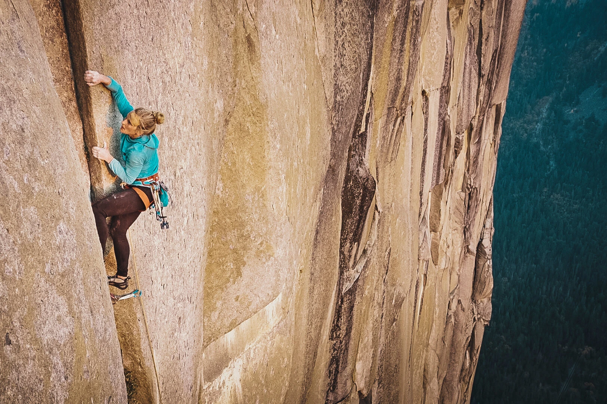

A Record-Setting Ascent of El Capitan
by Marie Fazio
Emily Harrington is the first woman to free-climb the Golden Gate route up El Capitan, a 3,000-foot-high monolith in Yosemite National Park, in under 24 hours.
@emilyharrington on Instagram
Her head bloodied and bandaged, and her hands caked with chalk, Emily Harrington pulled herself over the last lip of El Capitan and into the clear, still night above Yosemite National Park, 21 hours 13 minutes and 51 seconds after she began her ascent.
El Capitan, known as El Cap, is a 3,000-foot-high granite edifice that draws thousands of climbers to Yosemite each year. Climbers typically take around four to six days to reach the top, using a variety of routes. Only a few elite climbers, Ms. Harrington now among them, have done it in less than a day.
Ms. Harrington, 34, of Tahoe City, Calif., chose the Golden Gate route, which is divided into 41 pitches, or sections, because she had struggled to complete it in six days when she was first learning to free-climb Yosemite’s monoliths.
Ms. Harrington, who started about 1:30 a.m., completed the first two-thirds of the route with Alex Honnold, whose free-solo climb of El Cap, without ropes, was chronicled in the documentary film “Free Solo.” They were attached by a rope — her on top, him at the bottom — moving up the wall like a caterpillar.
“Slow is smooth, smooth is fast.”
Emily Harrington, 34, climbing El Capitan in Yosemite National Park last Wednesday.
Jon Glassberg/Louder Than 11
“It was this giant representation of everything I’ve worked for in climbing boiled down into one day,” she said in an interview. “There was a lot going on in my head, but at the same time I had this confidence deep down because I knew that I was more ready than I ever had been in my entire life.”
@emilyharrington on Instagram
The climb went smoothly until she attempted a difficult pitch in the sun around noon on Wednesday. Her fingers were so slick with sweat that she slipped off, she said, so she rested for 30 minutes and tried again. She slipped off again, this time smacking her head against the wall as she swung on the rope. Suddenly, she said, there was “blood everywhere, spewing out from my head.”
“There was part of me that wanted to give up and the other part of me was like, ‘You owe it to yourself to try again,’” she said. “Then I just had one of those attempts where it was an out-of-body experience, like, ‘I can’t believe I’m still holding on, I can’t believe I’m still holding on,’ and then I was finished with the pitch.”
A little after 10:30 p.m., after hours of uncertainty and mental and physical strain, Ms. Harrington pulled herself onto the ledge at the top, where she and Mr. Ballinger were met by some of her closest friends. They popped a bottle of Champagne and Ms. Harrington called her parents before the group began the two-hour descent to El Cap’s base.
Credits
Read A Record-Setting Ascent of El Capitan by Marie Fazio for the New York Times.
Background image by Mark Ralston/Getty Images.
Site by Jane Wilson. MEJO 187, 2021.